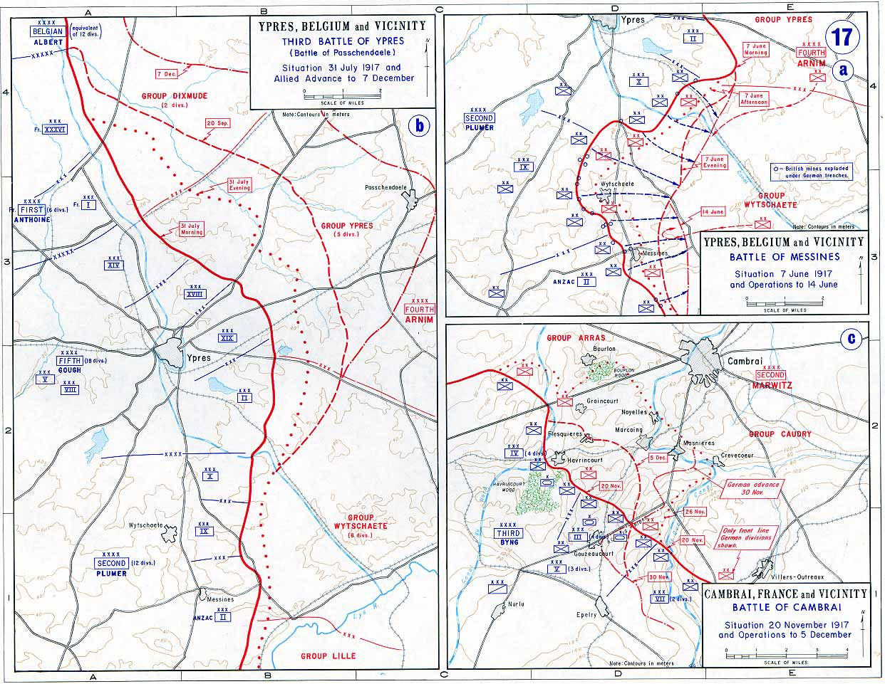

La battaglia di Cambrai (20 novembre - 3 dicembre 1917) fu combattuta dalla BEF (British Expeditionary Force - Forza di spedizione britannica) contro le forze tedesche nel corso della prima guerra mondiale. Nel corso di questa battaglia furono usati per la prima volta con risultati positivi i carri armati, dimostrando che la linea Hindenburg poteva essere superata, mentre i contrattacchi tedeschi adottarono per la prima volta su questo fronte la tattica dell'infiltrazione, già sperimentata con successo a Riga (1917), e utilizzata poi con la massima efficacia nel Kaiserschlacht (1918).
Cambrai (città francese del dipartimento Nord) nel 1917 era un punto sensibile per i rifornimenti tedeschi al Sigfried Stellung (Linea Sigfrido), parte della linea Hindenburg, inoltre la Cresta di Burlon, prossima alla città, sarebbe stata un ottimo punto di appoggio da cui minacciare le retrovie tedesche.
Il piano
La prima proposta per un attacco su Cambrai utilizzando i carri armati fu effettuata fin dal giugno 1917 dal maggior generale Fuller e, quasi contemporaneamente, da Henry Hugh Tudor. Entrambi i piani furono presi in considerazione da Julian Byng, comandante della 3ª Armata. Douglas Haig, dopo il fallimento delle operazioni attorno ad Ypres nel settembre 1917, approvò il piano proposto da Byng, con il nome in codice Operazione GY. La regione della Somme era stata scelta per diversi motivi, in particolare perché i britannici speravano che il terreno piano e solido fosse più adatto ad operare con i carri armati del terreno fangoso e paludoso trovato sul fronte delle Fiandre.
Nella concezione di Fuller la battaglia doveva essere un'incursione per «mettere fuori combattimento uomini e cannoni del nemico, demoralizzandolo e disorganizzandolo, e non per occupare terreno», e successivamente «la durata dell'incursione deve essere breve - da otto a dodici ore - in modo che il nemico non abbia tempo di concentrare forze nella zona per effettuare un contrattacco» con da sei a nove battaglioni di carri e non più di tre divisioni di fanteria o cavalleria, operando su un fronte di non più di 7 km. Byng trasmise questa idea ad Harding, ma le proposte rimasero ferme inizialmente, dato che l'attenzione del comandante supremo era concentrata sulla battaglia di Ypres. Quando l'attenzione si distrasse da Ypres lo stato maggiore britannico aveva trasformato un'incursione in un assalto frontale al sistema di trincee.
A questo punto il piano era diventato piuttosto complesso, ma praticamente la linea di difesa tedesca avrebbe dovuto essere sfondata da un attacco concentrato su un fronte relativamente stretto (circa 8 km) fra il Canal du Nord ed il canale di St Quentin, circondando Cambrai ed occupando la cresta di Burlon. Avrebbero dovuto essere utilizzate nuove tattiche, compresa l'interdizione aerea e la cooperazione fra fanteria e carri. Nel piano era previsto anche l'impiego della cavalleria, che avrebbe dovuto sfruttare la breccia aperta dai carri per dirigersi sul fiume Sensée. L'assalto sarebbe stato guidato dalle tredici divisioni della 3ª Armata britannica, mentre altre dieci divisioni britanniche della 2ª e 5ª Armata si stavano ancora riprendendo dalle perdite subite nel corso della Terza battaglia di Ypres. II comandante della 3ª Armata, a cui era affidato tutto lo svolgimento dell'operazione con il III ed il IV Corpo d'armata, Byng, era molto più ottimista di Haig sul successo dell'operazione. Le forze tedesche contrapposte facevano parte della 2ª Armata, comandata dal generale Georg von der Marwitz, indicate come Gruppo Cuadry (o XIII Corpo d'armata) e consistevano, all'inizio dell'operazione, nella 20ª, 54ª e 183ª Divisione di linea e dalla 9ª Divisione della riserva.
Il compito di guidare l'attacco era stato assegnato alle divisioni del III e del IV Corpo d'armata del BEF. Il III Corpo d'armata avrebbe dovuto attaccare a sud tra Crèvecoeur e Bonavis, con le divisioni di cavalleria in riserva per sfruttare lo sfondamento che avrebbe dovuto avvenire fra Marcoing e Masnières. Il IV Corpo d'armata doveva avanzare a nord per occupare Havricourt, Flesquières, Graincourt e Cantaing prima di facilitare alla cavalleria l'occupazione di Bourlon e delle relativa cresta, di notevole importanza tattica. Il V Corpo d'armata doveva restare in riserva per sfruttare il successo e occupare il terreno fino al fiume Sensée e fermarsi a coprirne i guadi. Il Tank Corps (unità in cui erano raggruppati tutti i carri armati britannici) sotto il comando del generale di brigata Hugh Elles fornì tutto il suo organico di oltre 350 carri Mark IV pronti all'impiego per il primo giorno di combattimento, garantendo di portarlo a 476 carri nelle giornate successive. Nella prima ondata d'assalto erano compresi 216 carri, mentre 96 erano in riserva. Tutti i carri della prima ondata avevano sulla prua delle grosse fascine per permettere l'attraversamento della trincee o grappini speciali per trascinare via il filo spinato. Le prime avanzate erano effettuate in cooperazione fra carri armati e fanterie, con un carro in testa alla formazione e due carri arretrati a scalare di circa 50 m, seguiti dalla fanteria in fila per due, con otto plotoni di fanteria per carro che avevano il compito di rastrellare la fanteria nemica e tenere le posizioni occupate dai carri, oltre a quello di attaccare eventuali unità di artiglieria che avessero minacciato i carri. Quattordici squadroni del Royal Flying Corps (l'unità dell'esercito in cui erano raggruppati gli aerei) avevano il compito di appoggio ravvicinato, per mitragliare le trincee e (secondariamente) coprire il rumore dei carri che avanzavano.
L'attacco britannico
L'attacco iniziò alle 6:00 del 20 novembre, con un tiro di sbarramento preparato con cura e previsto, ma senza un aggiustamento preliminare da parte di 1003 pezzi di artiglieria sui punti critici delle difese tedesche, seguiti immediatamente da tiro di sbarramento con fumogeni e tiro di sbarramento per coprire a una distanza di 300 m le unità avanzanti. Nonostante gli sforzi per conservare la segretezza le forze tedesche avevano avuto informazioni da disertori relativamente ad un attacco con carri nella zona di Havricourt ed erano in uno stato di allerta moderato. Tuttavia la mancanza di un tiro di preparazione continuo (in genere la preparazione di artiglieria per un attacco durava diversi giorni) non aveva messo in allarme ad alto livello di rischio le unità di prima linea.
Nella maggior parte del fronte ci fu un notevole successo, ed i britannici ebbero l'impressione che fosse sul punto di realizzarsi una grande vittoria; la linea Hindenburg sembrava finalmente sfondata, avendo effettuato avanzate fino a otto chilometri di profondità. All'ala destra la 12ª Divisione avanzò fino al bosco di Lateau, prima di trincerarsi come ordinato, la 20ª Divisione leggera si aprì un varco attraverso La Vacquerie ed avanzò fino a catturare il ponte di Masnières sul canale St Quentin, che venne distrutto nel corso del combattimento, non è chiaro se dai genieri tedeschi o dal peso dei carri che tentarono di attraversarlo, presumibilmente i due fattori furono concorrenti per la sua distruzione; in ogni caso la sua distruzione impedì ogni ulteriore avanzata britannica oltre il canale. Al centro i britannici riuscirono a catturare Ribécourt e Marcoing, ma, quando la cavalleria si lanciò, in ritardo, nella breccia, fu sottoposta a duri contrasti e costretta a ritirarsi fino a Noyelles.
Al centro la 51ª Divisione Higlanders fu bloccata sul primo obiettivo, Flesquières, lasciando quindi esposti i fianchi delle unità che avanzavano ai suoi lati. Si ritiene che la responsabilità del fallimento sia dovuta alla decisione del comandante della divisione (generale G.M. Harper) di non seguire la procedura di cooperazione fra carri e fanteria prevista, ma di far avanzare i carri separatamente dalla fanteria, che, quindi, rimase sotto il fuoco della mitragliatrici tedesche senza la protezione dei carri. Secondo Basil H. Liddell Hart bastarono pochissime mitragliatrici a bloccare l'avanzata della fanteria. Flesquières era anche uno dei punti più forti della linea difensiva tedesca ed era appoggiata sui fianchi da punti altrettanto forti. La sua difesa sotto la direzione del maggiore Krebs permise un'ottima difesa contro i carri, impegnandoli aggressivamente con l'artiglieria. I rapporti immediatamente successivi al combattimento parlano di quaranta carri distrutti nell'area di Flesquières, fra cui sedici distrutti da un singolo cannone con un singolo sopravvissuto a maneggiarlo, tuttavia dopo la battaglia nell'area indicata furono trovati i relitti di cinque carri armati, fronteggiati da ben tre batterie operanti coordinatamente. Tuttavia, a causa dei cedimenti avvenuti ai loro fianchi, i difensori di Flesquières nel corso della notte abbandonarono le loro posizioni.
All'ala sinistra la 62ª Divisione aprì una larga breccia in direzione di Havrincourt e Graincourt fino ad arrivare in prossimità dei boschi sulla cresta di Bourlon e la 36ª Divisione alla sua sinistra raggiunse la strada Bapaume -Cambrai. Nel corso della prima giornata di combattimenti furono resi inutilizzabili ben 180 carri, tuttavia quelli distrutti furono solo 65, mentre 71 erano rimasti soggetti a guasti meccanici e 43 si erano impantanati. Le forze britanniche avevano perso 4 000 uomini, ma avevano catturato ben 4 200 prigionieri, soffrendo quindi un rapporto fra perdite subite e truppe impegnate pari a metà di quello subìto nel corso della battaglia di Passchendaele, combattuta appena poche settimane prima, mentre in sei ore avevano realizzata un'avanzata maggiore di quella ottenuta nei tre mesi precedenti.
Nonostante questi successi, le forze britanniche non erano riuscite a raggiungere le cime della cresta di Bourlon. Il comando tedesco rapidamente inviò rinforzi nel corso della notte e fu subito chiaro che le forze britanniche non erano state in grado di sfruttare completamente i successi delle prime ore di battaglia. Quando, il 21 novembre, la battaglia riprese le avanzate britanniche furono notevolmente rallentate. Nonostante la cattura nelle prime ore del mattino di Flesquières (abbandonata) e di Cantaing, il maggior impegno delle forze britanniche fu nel rinforzare le posizioni catturate invece che nell'ampliamento del terreno controllato. Le operazioni del III Corpo d'armata furono sospese e fu dato inizio a quelle del IV Corpo d'armata.
La prosecuzione delle operazioni era finalizzata all'occupazione della cresta di Bourlon. Il combattimento attorno alla cresta e ad Anneux fu selvaggio e molto costoso in termini di vite umane. I rinforzi tedeschi contrattaccarono la 21ª Divisione fuori da Moeuvres e la 22ª Divisione a Fontaine. Anche dopo l'occupazione di Anneux la 62ª Divisione fu incapace di entrare nel bosco di Bourlon, restando quindi esposta sui fianchi in un saliente del fronte britannico. Haig per proseguire l'offensiva contro la cresta di Bourlon sostituì la 62ª Divisione, ormai esaurita, con la 40ª Divisione (generale John Posnby). Appoggiata da almeno cento carri armati e 430 cannoni la 40ª Divisione attaccò nei boschi della cresta di Bourlon al mattino del 23 novembre, con scarsissimi progressi. I tedeschi avevano posto due divisioni (Gruppo Arras) sulla cresta con altre due in riserva (Gruppo Caudry) e gli aerei del Royal Flying Command erano impegnati dagli squadroni del Barone Rosso. Anche se la 40ª Divisione raggiunse la cresta dell'altura, fu comunque bloccata subendo la perdita di 4000 uomini in tre giorni.
Altre truppe britanniche furono portate in linea per muovere oltre i boschi di Fontaine, ma le riserve britanniche, comunque molto limitate a causa delle gravi perdite di Passchendaele, scomparvero rapidamente nella mischia, mentre i tedeschi continuavano ad inviare rinforzi. L'ultimo sforzo britannico avvenne il 27 novembre, effettuato dalla 62ª Divisione appoggiata da trenta carri. Un successo iniziale fu rapidamente vanificato dai contrattacchi tedeschi. A questo punto i britannici avevano creato un saliente nel fronte tedesco di circa 11 km per 9,5 km, con la fronte lungo lo spartiacque della cresta di Bourlon. Il 28 novembre terminò ufficialmente l'offensiva e fu ordinato ai soldati britannici di stendere fili spinati e costruire trincee. Rapidamente i tedeschi concentrarono il tiro della loro artiglieria sulle nuove posizioni britanniche. Il 28 novembre furono sparati più di 16.000 colpi di artiglieria sul bosco di Bourlon.
Il contrattacco tedesco
Mentre i britannici usavano tutte le forze che avevano a disposizione, restando in tal modo totalmente privi di riserve, per occupare la cresta, i tedeschi stavano rinforzando l'area del combattimento. Fin dal 23 novembre il comando tedesco giudicò improbabile uno sfondamento britannico ed iniziò a raccogliere le forze per una controffensiva. Nell'area di Cambrai furono raccolte 10 divisioni. I tedeschi intendevano rioccupare il saliente di Bourlon che si era creato con l'offensiva britannica ed effettuare un attacco su Havrincourt, mentre diversioni avrebbero impegnato il IV Corpo d'armata. Lo scopo finale minimo era quello di rioccupare le posizioni sulla linea Hindenburg. La tattica che intendevano utilizzare i tedeschi era quella già applicata a Riga e che era applicata proprio in quei giorni a Caporetto, cioè effettuare un tiro di preparazione di durata brevissima, ma di elevata intensità, seguito immediatamente dall'assalto, usando le tattiche di infiltrazione di Hutier. Questa tattica prevedeva che l'attacco fosse effettuato da gruppi d'assalto (Stoßtruppen), invece che da ondate di fanteria, trascurando i capisaldi nemici ed infiltrandosi nelle retrovie nemiche. All'assalto iniziale furono assegnate le tre divisioni del Gruppe Arras al comando del generale Otto von Moser.
L'attacco tedesco iniziò alle 7:00 del 30 novembre, impegnando quasi immediatamente la maggior parte delle divisioni del III Corpo d'armata. Il Gruppe Caudry attaccò da Bantouzelle in direzioni di Rumilly e si diresse su Marcoig. Il Gruppe Busogny aveva come obiettivo Banteux. La velocità iniziale dell'avanzata delle fanterie tedesche fu una sorpresa completa per i britannici. I comandi della 29ª e della 12ª Divisione rischiarono di essere catturati dalle forze operanti dietro la prima linea, con il generale di brigata Vincent che dovette combattere direttamente per il suo comando, ormai accerchiato, e prendere uomini da tutte le unità che si stavano ritirando per tentare di fermare i tedeschi. Nel settore sud l'avanzata tedesca si sviluppò per 13 km ed arrivò a pochi chilometri dalla città di Metz e dal suo collegamento con Bourlon. A Bourlon gli uomini di Moser incontrarono una resistenza più salda, dato che i britannici avevano assegnato alla difesa della cresta otto divisioni con il relativo supporto di artiglieria, quindi i tedeschi subirono pesanti perdite. Nonostante queste perdite i tedeschi giunsero a contatto con il dispositivo britannico ed avvennero feroci combattimenti. I britannici mostrarono una determinazione indomita, tanto che una sezione di otto mitragliatrici sparò più di 70.000 colpi nel tentativo di bloccare l'avanzata tedesca verso Bourlon.
La concentrazione degli sforzi britannici per tenere la cresta fu impressionante, tuttavia lasciò spazio per l'avanzata tedesca in altre parti del fronte, proprio come previsto dalle tattiche utilizzate da questi. Solo l'arrivo casuale dei carri britannici ed il cadere della notte permisero di tenere qualcosa di simile a una linea di difesa. Il giorno successivo l'impeto dell'avanzata tedesca si era esaurito, ma la pressione continua il 3 dicembre portò alla cattura tedesca de La Vacquerie ed alla ritirata britannica dalla riva orientale del canale di St Quentin. I tedeschi avevano raggiunto una linea che curvava dalla cresta di Quentin a Marcoing. La loro cattura della cresta di Bonvais mise in pericolo le posizioni britanniche su Bourlon.
Risultato
Il 3 dicembre Haig ordinò di ritirarsi alle truppe che tenevano il saliente ed il 7 dicembre tutti i guadagni territoriali britannici erano stati abbandonati, eccettuata una parte della linea Hindenburg attorno a Havrincourt, Ribécourt e Flequières. I tedeschi avevano perso questo terreno, ma avevano guadagnato un tratto di terreno a sud della cresta Welsh.
Le perdite totali per entrambi i combattenti furono di circa 45.000 uomini ciascuno, con 11.000 tedeschi e 9.000 britannici prigionieri. In termini territoriali i tedeschi avevano recuperato quanto perso all'inizio con un leggero guadagno. Nonostante i risultati, nella battaglia si considerò dimostrato che anche le più forti difese su trincee potevano essere sopraffatte da un attacco massiccio di carri. I britannici avevano constatato il vantaggio fornito dai carri, mentre il comando tedesco aveva visto il potenziale delle nuove tattiche di fanteria che utilizzavano le Stosstruppen. Successivamente Fuller, l'ideatore del piano britannico, sviluppò una sua teoria di impiego che prevedeva sia la tattica di infiltrazione della fanteria sia l'uso dei carri armati come arma strategica e non più solo tattica per lo sfondamento delle linee fortificate.
Un reggimento dell'esercito britannico, esattamente l′Hudson Cavalleria, partecipò alla battaglia, successivamente fu inglobato nell'Esercito Indiano, ed ancora celebra fra le commemorazioni reggimentali il Cambrai Day.
| Battaglia di Cambrai parte del fronte occidentale della prima guerra mondiale | |
|---|---|
|  | |
| Data | 20 novembre - 6 dicembre 1917 |
| Luogo | Cambrai, Francia |
| Esito | vittoria tattica tedesca |
| Schieramenti | |
|
Regno Unito Canada Francia Stati Uniti (solo il 30 novembre) |
Germania |
| Comandanti | |
| Julian Byng | Georg von der Marwitz |
| Effettivi | |
|
2 Corpi d'armata 476 carri armati |
1 Corpo d'armata |
| Perdite | |
|
44.207 179 carri |
persi 45.000 (stime britanniche) |